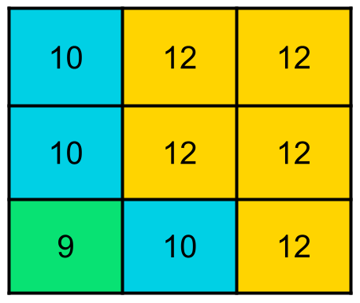

Matchup to OC-CCI#
The completed chlorophyll dataset is next matched to the Ocean Colour Climate Change Initiative (OC-CCI) chlorophyll data, with 4km spatial resolution, and Optical Water Types (OWTs) derived from the OC-CCI Rrs data (wavelengths = 412, 443, 490, 510, 560, 665). Due to the size of the in situ dataframe and the size of the satellite data, many steps had to be taken to easy the data processing. This includes subsetting the satellite data to only North American regions, only pulling relevant dates, and processing the matchup one year at a time.
import numpy as np
import pandas as pd
import xarray as xr
from datetime import datetime,date, timedelta
import time
import warnings
warnings.filterwarnings('ignore', category=pd.errors.SettingWithCopyWarning)
warnings.filterwarnings('ignore', category=FutureWarning)
import os
from scipy import stats
import math
from math import radians, sin, cos, sqrt, atan2
import datetime as dt
from scipy import stats
First, match insitu chlorophyll to OC-CCI chlorophyll#
The function, “haversine_distance_vectorized” is used to calculate the distance between and in situ coordinate and a satellite coordinate to ensure the matchups are reasonably far apart (6km in this case).
def haversine_distance_vectorized(lat1, lon1, lat2, lon2):
"""
Calculate the haversine distance between two sets of points in a vectorized way.
Parameters:
lat1, lon1: Latitude and longitude of the first set of points
lat2, lon2: Latitude and longitude of the second set of points
Returns:
Array of distances in kilometers.
"""
R = 6371 #radius of earth
#convert latitude and longitude from degrees to radians
lat1_rad, lon1_rad = np.radians(lat1), np.radians(lon1)
lat2_rad, lon2_rad = np.radians(lat2), np.radians(lon2)
#calculate differences in coordinates
dlon = lon2_rad - lon1_rad
dlat = lat2_rad - lat1_rad
#haversine formula
a = np.sin(dlat / 2)**2 + np.cos(lat1_rad) * np.cos(lat2_rad) * np.sin(dlon / 2)**2
c = 2 * np.arctan2(np.sqrt(a), np.sqrt(1 - a))
distance = R * c
return distance
The “slice_before_concat” function is used to subset the satellite xarrays from global to the North American region.
def slice_before_concat(ds):
"""
Slices the xarray dataset to keep only a specific lat/lon range instead of loading in global data
NOTE: 'lat' and 'lon' here need to have same naming convention as the satellite nc file
"""
ds = ds.sel(lat=slice(80,10),lon=slice(-179,-40)) #slice xarray within these lat and lon bounds
return ds
The “insitu_year” function is used to reduce the in situ dataframe to a given year, and to pull the specific dates to only gather relevant satellite files. We subset the in situ dataframe to a year to aid in processing power as matching the whole dataframe at once was too memory intensive.
def insitu_year(df,year):
'''
Takes a dataframe and given year, returns dataframe with only data from that year and list of YYYmmdd times to pull xarray file names
df = in situ dataframe, with datetime column
year = desired year
returns:
filtered_df= in situ dataframe subset to the given year
dates = list of unique dates in format YYYYmmdd
'''
year = str(year) #ensure year is string
start_date = pd.Timestamp(year+'-01-01 00:00:00') #jan 1st of year
end_date = pd.Timestamp(year+'-12-31 23:59:59') #dec 31st of year
filtered_df = df[df['datetime'].between(start_date,end_date)].reset_index(drop=True) #only pull between these dates from df
unique_dates=filtered_df.copy()
unique_dates['date'] = unique_dates.datetime.dt.date #create column of just dates without times
unique_dates = unique_dates.drop_duplicates(subset=['date'], keep='first').astype(str) #find all unique dates and turn to str
unique_dates['date'] = unique_dates['date'].str.replace('-', '') #take out all -
dates = unique_dates.date #return just the dates as an array
return filtered_df, dates
The function “sat_insit_match3” is used to match the satellite xarray to the in situ dataframe. The output of this function is a dataframe with the same in situ columns, but with additional satellite columns such as chl_occci (the OC-CCI chlorophyll value), matched_sat_time (the time of the satellite matchup), and matched_spatial_dist_km (the distance between the satellite point and the in situ point).
def sat_insit_match3(sat_xr, insit_df):
''' takes a satellite xarray and a in situ dataframe and matches datapoinst with same lat/lon/datetime
sat_xr: satellite xarray subset to only unique dates from in situ dataframe
insit_df: in situ dataframe subset to specific year
return: insitu dataframe with additional colum for satellite matches
'''
time_indexer = xr.DataArray(insit_df['datetime'], dims='point') #pull all the dates and turn into array
lat_indexer = xr.DataArray(insit_df['lat'], dims='point') #pull all lats and turn into an array
lon_indexer = xr.DataArray(insit_df['lon'], dims='point') #pull all lons and turn into an array
print("Finding nearest satellite points for all in-situ data at once...")
#use xarray.sel to gather the same lat, lon, and time points as the in situ dataset from the satellite data
matched_sat_points = sat_xr.sel(time=time_indexer, lat=lat_indexer,lon=lon_indexer,method='nearest')
print("Filtering matches based on spatial and temporal criteria...")
#calculate the distance in the matched sat point is from the in situ point.
distances_km = haversine_distance_vectorized( insit_df['lat'].values, insit_df['lon'].values, matched_sat_points['lat'].values,
matched_sat_points['lon'].values)
#check if the match is on the exact same day.
time_match_mask = insit_df['datetime'].dt.date.values == pd.to_datetime(matched_sat_points['time'].values).date
#create mask that only retains data where the dates match.
valid_indices = np.where(time_match_mask)[0]
print(f"Found {len(valid_indices)} valid matches out of {len(insit_df)} points. Now extracting 3x3 grids...")
#initiate columns to put satellite information
insit_df['chl_occci'] = np.nan
insit_df['matched_sat_time'] = pd.NaT
insit_df['matched_spatial_dist_km'] = np.nan
#Gather surrounding 3x3 pixels and find the average
if len(valid_indices) > 0: #as long as there are points that pass the date mask
sat_lat_coords = sat_xr['lat'].values ##grab the lat and lon points from WHOLE xarray
sat_lon_coords = sat_xr['lon'].values
#loop ONLY over the valid matches to extract the 3x3 grid.
for idx in valid_indices:
#get the coordinates of the valid matched satellite point.
matched_lat = matched_sat_points['lat'].values[idx]
matched_lon = matched_sat_points['lon'].values[idx]
matched_time = matched_sat_points['time'].values[idx]
#using the coordinates from the valid matches, gather the index value that matches to the whole xarray
lat_idx = sat_xr.indexes['lat'].get_loc(matched_lat)
lon_idx = sat_xr.indexes['lon'].get_loc(matched_lon)
time_idx = sat_xr.indexes['time'].get_loc(matched_time)
#gather slice information the surrounding lat and lon pixels
lat_slice = slice(max(0, lat_idx - 1), min(len(sat_lat_coords), lat_idx + 2))
lon_slice = slice(max(0, lon_idx - 1), min(len(sat_lon_coords), lon_idx + 2))
#extract the 3x3 grid using isel.
grid_data = sat_xr['chlor_a'].isel(time=time_idx, lat=lat_slice, lon=lon_slice) #gather the chlorophyll data from surrounding pixels
grid_values = grid_data.values.flatten() #flatten array
#calculate the mean of the grid
valid_grid_values = grid_values[~np.isnan(grid_values)] #remove any nans from the array
grid_mean = np.mean(valid_grid_values) if valid_grid_values.size > 0 else np.nan #as long as the array has a value, find the mean, else set as nan
#store the results in the DataFrame.
insit_df.loc[idx, 'chl_occci'] = grid_mean
insit_df.loc[idx, 'matched_sat_time'] = matched_time
insit_df.loc[idx, 'matched_spatial_dist_km'] = distances_km[idx]
print('Finished matching process!')
return insit_df
The “insit_match” function takes the chlorophyll dataframe and a given year and subsets the in situ dataframe and satellite xarray to given dates in the year, creates a single satllite xarray, and runs all the above functions to return the final matched dataframe for a given year.
def insit_match(insitu_df,year):
'''
code to gather and concat all xarray files with matching dates to the in situ dataset and subset to north america
input:
insitu_df: dataframe with datetime, lat, lon, and variable
year: the specific year to subset the dataframe to
returns:
matched_chl:dataframe subset to that specific year with matched OC-CCI chlorophyll
'''
#first, use the function insitu_year to subset the in situ dataframe to specific year. this helps with processing
insit_year, dates_year= insitu_year(insitu_df,year)
existing_files= []
for date in sorted(dates_year): #for each date that recorded data
file_date = r'CHL\ESACCI-OC-L3S-CHLOR_A-MERGED-1D_DAILY_4km_GEO_PML_OCx-'+str(date)+'-fv6.0.nc' #load in the specific nc file name
if os.path.exists(file_date): #if the file exists, then add to a list of files
existing_files.append(file_date)
else:
print(f"Warning: File not found {date}: {file_date}") #else, skip
#If there are some issues with corrupted files, comment out the above block from "existing_files" to "print", and uncomment the below block
#existing_files= []
#for date in sorted(dates_year):
# file_date = r'CHL\ESACCI-OC-L3S-CHLOR_A-MERGED-1D_DAILY_4km_GEO_PML_OCx-'+str(date)+'-fv6.0.nc'
# if os.path.exists(file_date): #if the file exists, try to open and load it in.
# try:
# temp_ds = xr.open_dataset(file_date, chunks={}) #open the file
# _ = temp_ds['chlor_a'].isel(time=0, latitude=0, longitude=0).compute() #load in the data instead of lazy load to make sure it exists.
# temp_ds.close() #close the file
# existing_files.append(file_date) #if it oppened, append to the list of files
# except Exception as e: #if it didn't open, then skip.
# print(f"Skipping corrupted or unreadable file: {file_date}") #. Error: {e}
#temp_ds.close()
# else:
# print(f"Warning: File not found for date {date}: {file_date}") #if the file name doesn't exist, skip
#concat all satellite .nc files into single file
coastal_us_combo= xr.open_mfdataset(existing_files, preprocess=slice_before_concat,combine='by_coords') #open all files, concat into one subset to north america
print('satellite refiguring complete')
test_insitu = insit_year.copy().reset_index(drop=True) #subset dataframe to specific year, reset the index
matched_chl = sat_insit_match3(coastal_us_combo, test_insitu) #run the satellite matching function
coastal_us_combo.close() #close the file
return matched_chl #matched_chl = dataframe of in situ chlorophyll to OC-CCI chlorophyll
Run the Chlorophyll matchups#
chl_all = pd.read_excel(r"Coastal_chl_final\all_chl.xlsx") #load in concatinated chlorophyll dataset.
chl_all['datetime'] = chl_all['datetime'].apply(pd.to_datetime) #ensure datetime is in pandas format
---------------------------------------------------------------------------
FileNotFoundError Traceback (most recent call last)
Cell In[7], line 1
----> 1 chl_all = pd.read_excel(r"Coastal_chl_final\all_chl.xlsx") #load in concatinated chlorophyll dataset.
2 chl_all['datetime'] = chl_all['datetime'].apply(pd.to_datetime)
File ~\AppData\Local\anaconda3\Lib\site-packages\pandas\io\excel\_base.py:495, in read_excel(io, sheet_name, header, names, index_col, usecols, dtype, engine, converters, true_values, false_values, skiprows, nrows, na_values, keep_default_na, na_filter, verbose, parse_dates, date_parser, date_format, thousands, decimal, comment, skipfooter, storage_options, dtype_backend, engine_kwargs)
493 if not isinstance(io, ExcelFile):
494 should_close = True
--> 495 io = ExcelFile(
496 io,
497 storage_options=storage_options,
498 engine=engine,
499 engine_kwargs=engine_kwargs,
500 )
501 elif engine and engine != io.engine:
502 raise ValueError(
503 "Engine should not be specified when passing "
504 "an ExcelFile - ExcelFile already has the engine set"
505 )
File ~\AppData\Local\anaconda3\Lib\site-packages\pandas\io\excel\_base.py:1550, in ExcelFile.__init__(self, path_or_buffer, engine, storage_options, engine_kwargs)
1548 ext = "xls"
1549 else:
-> 1550 ext = inspect_excel_format(
1551 content_or_path=path_or_buffer, storage_options=storage_options
1552 )
1553 if ext is None:
1554 raise ValueError(
1555 "Excel file format cannot be determined, you must specify "
1556 "an engine manually."
1557 )
File ~\AppData\Local\anaconda3\Lib\site-packages\pandas\io\excel\_base.py:1402, in inspect_excel_format(content_or_path, storage_options)
1399 if isinstance(content_or_path, bytes):
1400 content_or_path = BytesIO(content_or_path)
-> 1402 with get_handle(
1403 content_or_path, "rb", storage_options=storage_options, is_text=False
1404 ) as handle:
1405 stream = handle.handle
1406 stream.seek(0)
File ~\AppData\Local\anaconda3\Lib\site-packages\pandas\io\common.py:882, in get_handle(path_or_buf, mode, encoding, compression, memory_map, is_text, errors, storage_options)
873 handle = open(
874 handle,
875 ioargs.mode,
(...)
878 newline="",
879 )
880 else:
881 # Binary mode
--> 882 handle = open(handle, ioargs.mode)
883 handles.append(handle)
885 # Convert BytesIO or file objects passed with an encoding
FileNotFoundError: [Errno 2] No such file or directory: 'Coastal_chl_final\\all_chl.xlsx'
chl_test=chl_all.loc[chl_all['depth']<=10] #since OC-CCI is sattellite data and only records 1 depth, reduce to just surface waters
#next, since this dataset has flourecence along with extracted, only keep 1 datapoint per datetime, lat, and lon.
#That way (as shown in next cell with variable 'a'), large sample resolutions don't skew the dataset
chl_test=chl_test.drop_duplicates(subset=['datetime', 'lat', 'lon'], keep='first').reset_index(drop=True)
#keep the shallowest sample within the top 10 meters
#run below code to see what years need to be run.
unique_dates=chl_test.copy() #copy dataframe to ensure no accidental changes happen to the original dataframe
unique_dates['date'] = unique_dates.datetime.dt.date #create column of just date
unique_dates = unique_dates.drop_duplicates(subset=['date'], keep='first').astype(str).reset_index(drop=True) #find all unique dates and turn to str
unique_dates['date'] = unique_dates['date'].str.replace('-', '') #take out all -
dates_year = unique_dates.date
a=chl_all.groupby(['datetime','lat','lon']).size().reset_index(name='counts') #how many samples are recorded in each datetime, lat, and lon.
a.nlargest(4, 'counts')
| datetime | lat | lon | counts | |
|---|---|---|---|---|
| 8721 | 2001-04-10 12:34:00 | 35.20177 | -76.24203 | 315 |
| 26707 | 2003-04-30 00:51:58 | 34.15600 | -119.94900 | 300 |
| 32321 | 2003-09-11 03:07:41 | 34.29800 | -119.88500 | 300 |
| 34475 | 2003-11-05 05:08:44 | 34.34300 | -119.86500 | 300 |
As mentioned above, the matchup process is done in parts (years) to aid in processing
chl_2000 =insit_match(chl_test,2000) #run insit_match to the chlorophyll data, subset to 2000. repeat for all years
chl_2000 = chl_2000.dropna(subset=['chl_occci']) #remove any empty OC-CCI matches, since we only want datapoints that correspond.
chl_2001 =insit_match(chl_test,2001)
chl_2001 = chl_2001.dropna(subset=['chl_occci'])
chl_2002 =insit_match(chl_test,2002)
chl_2002 = chl_2002.dropna(subset=['chl_occci'])
chl_2003 =insit_match(chl_test,2003)
chl_2003 = chl_2003.dropna(subset=['chl_occci'])
chl_2004 =insit_match(chl_test,2004)
chl_2004 = chl_2004.dropna(subset=['chl_occci'])
chl_2005 =insit_match(chl_test,2005)
chl_2005 = chl_2005.dropna(subset=['chl_occci'])
chl_2006 =insit_match(chl_test,2006)
chl_2006 = chl_2006.dropna(subset=['chl_occci'])
chl_2007 =insit_match(chl_test,2007)
chl_2007 = chl_2007.dropna(subset=['chl_occci'])
chl_2008 =insit_match(chl_test,2008)
chl_2008 = chl_2008.dropna(subset=['chl_occci'])
chl_2009 =insit_match(chl_test,2009)
chl_2009 = chl_2009.dropna(subset=['chl_occci'])
chl_2010 =insit_match(chl_test,2010)
chl_2010 = chl_2010.dropna(subset=['chl_occci'])
chl_2011 =insit_match(chl_test,2011)
chl_2011 = chl_2011.dropna(subset=['chl_occci'])
chl_2012 =insit_match(chl_test,2012)
chl_2012 = chl_2012.dropna(subset=['chl_occci'])
chl_2013 =insit_match(chl_test,2013)
chl_20103 = chl_2013.dropna(subset=['chl_occci'])
chl_2014 =insit_match(chl_test,2014)
chl_2014 = chl_2014.dropna(subset=['chl_occci'])
chl_2015 =insit_match(chl_test,2015)
chl_2015 = chl_2015.dropna(subset=['chl_occci'])
chl_2016 =insit_match(chl_test,2016)
chl_2016 = chl_2016.dropna(subset=['chl_occci'])
chl_2017 =insit_match(chl_test,2017)
chl_2017 = chl_2017.dropna(subset=['chl_occci'])
chl_2018 =insit_match(chl_test,2018)
chl_2018 = chl_2018.dropna(subset=['chl_occci'])
chl_2019 =insit_match(chl_test,2019)
chl_2019 = chl_2019.dropna(subset=['chl_occci'])
chl_2020 =insit_match(chl_test,2020)
chl_2020 = chl_2020.dropna(subset=['chl_occci'])
chl_2021 =insit_match(chl_test,2021)
chl_2021 = chl_2021.dropna(subset=['chl_occci'])
chl_2022 =insit_match(chl_test,2022)
chl_2022 = chl_2022.dropna(subset=['chl_occci'])
chl_2023 =insit_match(chl_test,2023)
chl_2023 = chl_2023.dropna(subset=['chl_occci'])
chl_2024 =insit_match(chl_test,2024)
chl_2024 = chl_2024.dropna(subset=['chl_occci'])
chl_2025 =insit_match(chl_test,2025)
chl_2025 = chl_2025.dropna(subset=['chl_occci'])
#since this dataset takes so long to run, everytime a year is matched added it to the existing matchups and save
current_matchup = pd.read_excel('sat_matchupCHL2.xlsx') #load in current matchup
dfs=[current_matchup,chl_2025] #append the dataframe to the existing matched dataframe
matched_all = pd.concat(dfs).reset_index(drop=True)
matched_all.to_excel("sat_matchupCHL2.xlsx", index = False) #export dataframe
Next, matchup the matched dataset to OWT dataset#
OWT .nc files were already created from the OC-CCI Rrs data. Some matchup functions can be reused from the chlorophyll matchup, but some have to be slightly tweaked to accuratly matchup the dataset. First, “slice_before_concat” needs to switch from lat and lon to latitude and longitude to match the xarray variable names.
def slice_before_concat(ds):
"""
Slices the xarray dataset to keep only a specific lat/lon range instead of loading in global data
NOTE: 'lat' and 'lon' here need to have same naming convention as the satellite nc file
"""
ds = ds.sel(latitude=slice(80,10),longitude=slice(-179,-40)) #slice xarray within these lat and lon bounds
return ds
Additionally, “sat_insit_match3” needs to be tweaked to retain OWT matchups, not chlorophyll matchups. It returns the matched dataframe along with columns ‘owt’ (mode of the surrounding 3x3 pixels) and ‘all_classes’ (array of all OWTs in grid). This functions finds the mode of the surrounding 3x3 pixels rather than the mean. So for example, if the 3x3 grid looks like:

then the owt = 12 and the all_classes = [10.0, 12.0, 12.0, 10.0, 12.0, 12.0, 9.0, 12.0, 12.0]
def sat_insit_match3(sat_xr, insit_df, spatial_diff_km,variable):
''' takes a satellite xarray and a in situ dataframe and finds datapoints with same lat/lon/datetime withing bounds
sat_xr: satellite satellite xarray subset to only unique dates from in situ dataframe
insit_df: in situ dataframe subset to specific year
spatial_diff_km: spatial boundary for matching in km
var: satellite variable name to match
return: insitu dataframe with additional colum for satellite matches
'''
#First make sure the in situ dataset has the right datetime format
insit_df['datetime'] = pd.to_datetime(insit_df['datetime'], errors='coerce')
insit_df.dropna(subset=['datetime'], inplace=True) #remove any empty datetime rows
insit_df.dropna(subset=['lat'], inplace=True) #remove rows without complete coordinates
insit_df.reset_index(inplace=True, drop=True)
time_indexer = xr.DataArray(insit_df['datetime'], dims='point') #pull all the dates and turn into array
lat_indexer = xr.DataArray(insit_df['lat'], dims='point') #pull all lats and turn into an array
lon_indexer = xr.DataArray(insit_df['lon'], dims='point') #pull all lons and turn into an array
print("Finding nearest satellite points for all in-situ data at once...")
#use xarray.sel to gather the same lat, lon, and time points as the in situ dataset from the satellite data
matched_sat_points = sat_xr.sel(time=time_indexer, latitude=lat_indexer,longitude=lon_indexer, method='nearest')
print("Filtering matches based on spatial and temporal criteria...")
#calculate the distance in the matched sat point is from the in situ point.
distances_km = haversine_distance_vectorized(insit_df['lat'].values, insit_df['lon'].values, matched_sat_points['latitude'].values,
matched_sat_points['longitude'].values)
#check if the match is on the exact same day.
time_match_mask = insit_df['datetime'].dt.date.values == pd.to_datetime(matched_sat_points['time'].values).date
#check if the match is within 6km of the in situ coordinates
spatial_match_mask = distances_km <= spatial_diff_km
#combine the two checks to create a mask where the dates match and within 6kms
valid_match_mask = time_match_mask & spatial_match_mask
#initiate columns to put satellite information
insit_df['owt'] = np.nan
insit_df['all_classes'] = np.nan
insit_df['all_classes'] = insit_df['all_classes'].astype(object)
#create mask that only retains data where the dates match.
valid_indices = np.where(valid_match_mask)[0]
print(f"Found {len(valid_indices)} valid matches out of {len(insit_df)} points. Now extracting 3x3 grids...")
#Gather surrounding 3x3 pixels and find the mode
if len(valid_indices) > 0: #as long as there are points that pass the date mask
sat_lat_coords = sat_xr['latitude'].values #grab the lat and lon points from WHOLE xarray
sat_lon_coords = sat_xr['longitude'].values
#loop ONLY over the valid matches to extract the 3x3 grid.
for idx in valid_indices:
#get the coordinates of the valid matched satellite point.
matched_lat = matched_sat_points['latitude'].values[idx]
matched_lon = matched_sat_points['longitude'].values[idx]
matched_time = matched_sat_points['time'].values[idx]
#using the coordinates from the valid matches, gather the index value that matches to the whole xarray
lat_idx = sat_xr.indexes['latitude'].get_loc(matched_lat)
lon_idx = sat_xr.indexes['longitude'].get_loc(matched_lon)
time_idx = sat_xr.indexes['time'].get_loc(matched_time)
#gather slice information the surrounding lat and lon pixels
lat_slice = slice(max(0, lat_idx - 1), min(len(sat_lat_coords), lat_idx + 2))
lon_slice = slice(max(0, lon_idx - 1), min(len(sat_lon_coords), lon_idx + 2))
#extract the 3x3 grid using isel.
grid_data = sat_xr[variable].isel(time=time_idx, latitude=lat_slice, longitude=lon_slice) #gather the OWT data from surrounding pixels
grid_values = grid_data.values.flatten() #flatten array
#calculate the mode, ignoring NaN values.
valid_grid_values = grid_values[~np.isnan(grid_values)] #remove any nans from the array
grid_mode = stats.mode(valid_grid_values).mode if valid_grid_values.size > 0 else np.nan #as long as the array has a value, find the mode, else set as nan
#store the results in the DataFrame.
insit_df.loc[idx, 'owt'] = grid_mode
insit_df.at[idx, 'all_classes'] = grid_values.tolist()
print('Finished matching process!')
return insit_df
We’ll also slightly alter the final matchup function to grab OWT file names.
def owt_insit_match(insitu_df, sat_xr, spatial_res, variable, year):
'''
code that produces dataframe of matching satellite points and insitu points.
input: insitu_df: dataframe with datetime, lat, lon, and variables
sat_xr: folder string to satellite data files
spatial_res: resolution boundry for matching (km)
variable: the variable being matched (OWT)
year: the year in situ and sat data are being compared (int)
returns:
in situ dataframe with matched datasets subset to the given year
'''
#first, reduce insitu_df to only stated year
insit_year, dates_year= insitu_year(insitu_df,year)
#next, pull xarray files that match to the dates of the insit_year
existing_files= []
for date in sorted(dates_year):
file_date = str(sat_xr)+str(date)+'-OCCCI-V6.0-GLOBAL_MAPPED-OWC_WEI.nc'
if os.path.exists(file_date):
existing_files.append(file_date)
else:
print(f"Warning: File not found for date {date}: {file_date}")
## NOTE: uncomment below if you're getting errors about corrupted files. THis code will open each file to ensure there's actual data inside
# existing_files= []
# var = 'water_class'
# for date in sorted(dates_year):
# file_date = str(sat_xr)+str(date)+'-OCCCI-V6.0-GLOBAL_MAPPED-OWC_WEI.nc'
# if os.path.exists(file_date): #if path exists, try to open it
# try:
# temp_ds = xr.open_dataset(file_date, chunks={}) # Use chunks={} for Dask if needed
# _ = temp_ds[var].isel(time=0, latitude=0, longitude=0).compute()
# temp_ds.close()
# existing_files.append(file_date)
# except Exception as e:
# print(f"Skipping corrupted or unreadable file: {file_date}") #. Error: {e}
#temp_ds.close()
# else:
# print(f"Warning: File not found for date {date}: {file_date}")
#concat all satellite .nc files into 1 single xarray file
coastal_us_combo= xr.open_mfdataset(existing_files, preprocess=slice_before_concat,combine='by_coords') #open all files, concat into one subset to north america
print('satellite refiguring complete')
test_insitu = insit_year.copy()
matched_chl = sat_insit_match3(coastal_us_combo, test_insitu, spatial_res,variable) #run the satellite matching function
return matched_chl #matched_chl = dataframe of in situ chlorophyll to OC-CCI OWT
#load in all the data with the sattellite matchups
chl_all = pd.read_excel(r"Coastal_chl_final\sat_matchupCHL2.xlsx")
chl_all['datetime'] = pd.to_datetime(chl_all['datetime'],format='mixed')
#all reducing already done in first round of matchups
insit_chl_coast2 = chl_all.copy()
test= insit_chl_coast2['datetime'].dt.year
test.value_counts()
#to match, run matching code for each year
df_matched2000 = owt_insit_match(insit_chl_coast2, r'OWC_WEI\D_',6, 'water_class', 2000)
df_matched2001 = owt_insit_match(insit_chl_coast2, r'OWC_WEI\D_',6, 'water_class', 2001)
df_matched2002 = owt_insit_match(insit_chl_coast2, r'OWC_WEI\D_',6, 'water_class', 2002)
df_matched2003 = owt_insit_match(insit_chl_coast2, r'OWC_WEI\D_',6, 'water_class', 2003)
df_matched2004 = owt_insit_match(insit_chl_coast2, r'OWC_WEI\D_',6, 'water_class', 2004)
df_matched2005 = owt_insit_match(insit_chl_coast2, r'OWC_WEI\D_',6, 'water_class', 2005)
df_matched2006 = owt_insit_match(insit_chl_coast2, r'OWC_WEI\D_',6, 'water_class', 2006)
df_matched2007 = owt_insit_match(insit_chl_coast2, r'OWC_WEI\D_',6, 'water_class', 2007)
df_matched2008 = owt_insit_match(insit_chl_coast2, r'OWC_WEI\D_',6, 'water_class', 2008)
df_matched2009 = owt_insit_match(insit_chl_coast2, r'OWC_WEI\D_',6, 'water_class', 2009)
df_matched2010 = owt_insit_match(insit_chl_coast2, r'OWC_WEI\D_',6, 'water_class', 2010)
df_matched2011 = owt_insit_match(insit_chl_coast2, r'OWC_WEI\D_',6, 'water_class', 2011)
df_matched2012 = owt_insit_match(insit_chl_coast2, r'OWC_WEI\D_',6, 'water_class', 2012)
df_matched2013 = owt_insit_match(insit_chl_coast2, r'OWC_WEI\D_',6, 'water_class', 2013)
df_matched2014 = owt_insit_match(insit_chl_coast2, r'OWC_WEI\D_',6, 'water_class', 2014)
df_matched2015 = owt_insit_match(insit_chl_coast2, r'OWC_WEI\D_',6, 'water_class', 2015)
df_matched2016 = owt_insit_match(insit_chl_coast2, r'OWC_WEI\D_',6, 'water_class', 2016)
df_matched2017 = owt_insit_match(insit_chl_coast2, r'OWC_WEI\D_',6, 'water_class', 2017)
df_matched2018 = owt_insit_match(insit_chl_coast2, r'OWC_WEI\D_',6, 'water_class', 2018)
df_matched2019 = owt_insit_match(insit_chl_coast2, r'OWC_WEI\D_',6, 'water_class', 2019)
df_matched2020 = owt_insit_match(insit_chl_coast2, r'OWC_WEI\D_',6, 'water_class', 2020)
df_matched2021 = owt_insit_match(insit_chl_coast2, r'OWC_WEI\D_',6, 'water_class', 2021)
df_matched2022 = owt_insit_match(insit_chl_coast2, r'OWC_WEI\D_',6, 'water_class', 2022)
df_matched2023 = owt_insit_match(insit_chl_coast2, r'OWC_WEI\D_',6, 'water_class', 2023)
df_matched2024 = owt_insit_match(insit_chl_coast2, r'OWC_WEI\D_',6, 'water_class', 2024)
df_matched2025 = owt_insit_match(insit_chl_coast2, r'OWC_WEI\D_',6, 'water_class', 2025)
current_matchup = pd.read_excel(r'Coastal_chl_final\owt_allchlV3.xlsx')
dfs=[current_matchup,df_matched2023]
matched_all = pd.concat(dfs).reset_index(drop=True)
matched_all.to_excel("owt_allchlV3.xlsx", index = False)